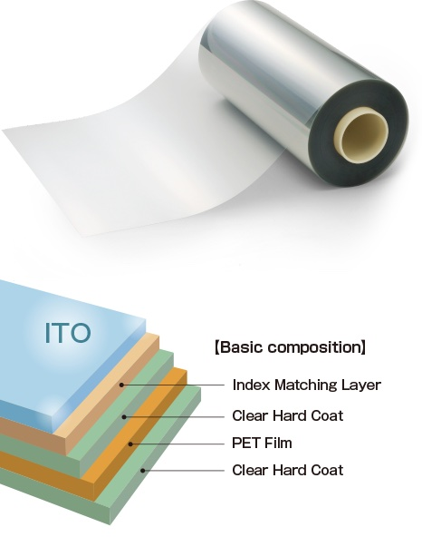
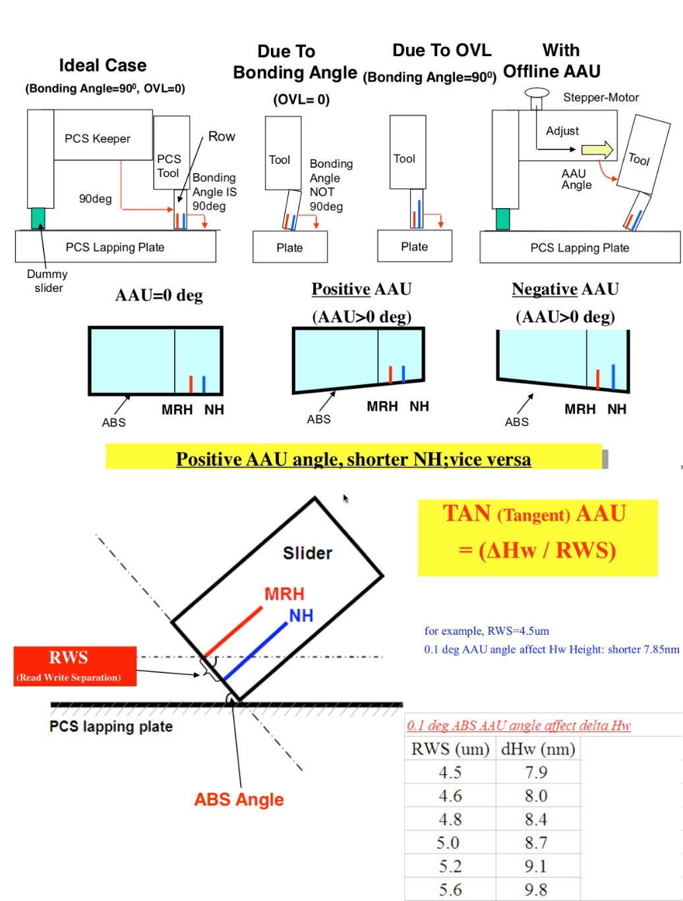

background-image: linear-gradient(120deg,rgba(46, 52, 64, 90%),rgba(46, 52, 64, 100%),rgba(46, 52, 64, 80%),rgba(46, 52, 64, 90%)), url(static/t0.gif) layout: true class: typo, typo-selection,nord-dark .abs-layout.top-93.left-2[ .oc-gray-6.font-sm[ [@xlhaw](https://github.com/xlhaw)] ] --- count: false class: center, middle, <div class="xyz-in" xyz="fade up big"> <h1>Welcome to Leon Xiao' Playground</h1> </div>  .hvr-buzz[2021.6.6] --- ## About Me .float-right.width-22.pt-xxs.pl-xs.ord-dark-steep-img[] I'm an undistinguished engineer in electroinc manufacturing industry. But I prefer to regard myself as a interpreter, which not only talks with all kinds of stackholders but also communicates with various machines and try to fathom the truth behind the curtain through data. Not so eloquent, even kind of introvert, but equiped with evergreen curiosity and firmly data-driven mindset. I'm also a big fans of open source, which breaks the boundaries and enables the continuous growth. Though the road might twist and it's somehow inevitable to reinvent the wheels, I still hope that I can contribute to the community and build some awesome stuffs some day. #### Gotcha ~~ You can find me here :) .ri-mail-line.icon-top.oc-blue-9[[E-mail](mailto:i@xlhaw.com)] .ri-linkedin-fill.icon-top.oc-blue-9[[LinkedIn](https://www.linkedin.com/in/xlhaw/)] .ri-github-fill.icon-top.oc-indigo-0[[Github](https://github.com/xlhaw)] .ri-twitter-fill.icon-top.oc-indigo-9[[Twitter](https://twitter.com/xlhaw)] .ri-instagram-fill.icon-top.oc-pink-5[[Instagram](https://www.instagram.com/xlhaw/)] .ri-netease-cloud-music-fill.icon-top.oc-red-9[[Music](https://music.163.com/#/user/home?id=123036)] .ri-telegram-fill.icon-top.oc-blue-8[[Telegram](https://t.me/xlhaw)] .ri-stack-overflow-fill.icon-top.oc-yellow-4[[StackOverflow](https://stackoverflow.com/xlhaw)] .ri-earth-fill.icon-top.oc-violet-8[[Gyrosco.pe](http://me.xlhaw.com)] --- ## Tech Stack Below are some useful tools and skillsets I'm diving in. .column-5.column-norule.column-gap-xs[ .card[ .img[] ] .card[ .img[] ] .card.dark.grape.arrow-left.width-94[ .section.font-md.oc-gray-0.center[** Data Analytics**] ] .card[ .img[] ] .card[ .img[] ] .card[ .img[] ] .card[ .img[] ] .card[ .img[] ] .card.gradient.lime[ .section[**Failure Analysis**] ] .card[ .img[] ] .card[ .img[] ] .card[ .img[] ] .card[ .img[] ] .card[ .img[] ] .card[ .img[] ] .card.gradient.cyan.center[ .section.font-md.center[**Wafer Fabrication**] ] .card.dark.teal.arrow-right.width-94[ .section.font-md.oc-gray-0.center[** To Be Continued..**] ] ] --- ## Experiences <div class="vue"> <q-scroll-area :visible="true" :thumb-style="{right: '2px', borderRadius: '4px', backgroundColor: '#4C566A', width: '4px', opacity: 0.4}" style="height: 470px; font-size: 14px;"> <template> <div class="q-px-lg q-pb-md"> <q-timeline color="secondary"> <q-timeline-entry title="Product Engineer" subtitle="2017.7 ~ Now" avatar="static/TDK.png" > <small>SAE Magnetics(HK) - New Product Engineering - Wafer Evaluation and FA</small> <div> Early assessment, feedback for new reader design and new writer pole materials; MR sensor and lapping sensor development and optimization; Magnetic sensor key dimensions and performance monitor and analysis; Support wafer reliability alert system and early backend REL assessment; Product development yield analysis and wafer related issue FA </div> </q-timeline-entry> <q-timeline-entry title="R&D Engineer" subtitle="2015.5 ~ 2017.5" avatar="static/BIEL.jpeg" > <small>Biel Crystal Manufactory Ltd - Central R&D Department - ITO IM film and Cover Plastic Development </small> <div> UV hard coating assessment, related process windows study and optimization; Establish testing standard and coordinate environmental testing for new materials; Analyze component product/material and support sourcing to develop new suppliers; Touch Panel backend process follow up, failure analysis and propose countermeasure. </div> </q-timeline-entry> <q-timeline-entry title="R&D Engineer" subtitle="2014.6 ~ 2015.5" avatar="static/OFILM.png" > <small>Nanchang O-film Technology Co., Ltd - NanoAg R&D Group - Metal Mesh Touch Sensor Development</small> <div> UV imprint coating, ink printing and glue rework process development; Conduct functional and environmental testing for UV cured adhesives and nano-sliver inks; Reliability engineering for MM’s electro-migration and yellowish issue; Support the engineering department for the material cost down. </div> </q-timeline-entry> </q-timeline> </div> </template> </q-scroll-area> </div> --- ## Educations <div class="vue"> <q-scroll-area :visible="true" :thumb-style="{right: '2px', borderRadius: '4px', backgroundColor: '#4C566A', width: '4px', opacity: 0.4}" style="height: 470px; font-size: 14px;"> <template> <div class="q-px-lg q-pb-md"> <q-timeline color="secondary"> <q-timeline-entry title="Project Management Institute" subtitle="2016.9" avatar="static/pmi.png" > <small>PMP® Certification</small> </q-timeline-entry> <q-timeline-entry title="Nanchang University" subtitle="2011.9 ~ 2014.6" avatar="static/NCU.jpeg" > <small>Aplied Chemistry. Master Degree</small> <div> Learn the synthesis and characterization of heterogeneous catalysts for environmental application. Fabricated SnO2 nanomaterials with different morphologies and redox properties were investigated. Research paper titled “SnO2 nano-rods with superior CO oxidation performance” was published in <i>Journal of Materials Chemistry A</i>, January 2014. </div> </q-timeline-entry> <q-timeline-entry title="Shenyang University of Technology" subtitle="2007.9 ~ 2011.7" avatar="static/SUT.jpeg" > <small>Aplied Chemistry. Bachelor Degree</small> <div> One of the best memories left in the old campus. Learned the most of the chemistry and materials science, passed CET-6 & NCRE-L3 and learned some German as well. Not a top student, yet still managed to gain the <mark>National Inspirational Reward</mark>. </div> </q-timeline-entry> </q-timeline> </div> </template> </q-scroll-area> </div> --- .abs-layout.top-0.left-0.height-60[ .card.noborder.noround.m-0.width-100.height-70[ .img.height-98[] .abs-layout.oc-yellow-3[ Shaoguan ] ] ] .abs-layout.left-0.top-40.height-40.center.width-60[ .abs-layout.oc-violet-3[ Hengyang ] .img[] ] .abs-layout.top-72.height-30.center[ .font-xxl.pt-xs[ Travel Moments ] ] .abs-layout.left-35.top-64.height-95.center.width-27[ .abs-layout.oc-cyan-3[ Nanchang ] .img[] ] .abs-layout.left-60.top-40.height-95.center[ .abs-layout.oc-blue-3[ Huiyang ] .img[] ] --- ## Methodologies .rect.width-100.height-30[ .hline.gray.width-90.abs-layout.top-23[ ] .rect.left-20.width-23[ .circle.blue.border.width-15[] .oc-blue-0[**Problem Solving**] .font-sm.oc-yellow-0[ Materials Characterization<br> Modelling and Simulation<br> Reliability Engineering<br> DOE,SPC,DMAIC,TRIZ ] ] .rect.width-23[ .circle.green.border.width-15[] .oc-blue-0[**Project<br> Management**] .font-sm.oc-yellow-0[ Time/Cost/Scope/Quality/Risk<br> Stackholder/HR/Commu/Procurement<br> IPECC, SIPOC,PDCA, Agile, Scrum<br> ] ] .rect.width-23[ .circle.pink.border.width-15[] .oc-blue-0[**Product<br> Development**] .font-sm.oc-yellow-0[ Business Analysis<br> Rapid Prototyping<br> Beta Testing<br> VOC,QFD,FMEA,CAD/CAE ] ] .rect.width-23[ .circle.blue.border.width-15[] .oc-blue-0[**Programming**] .font-sm.oc-yellow-0[ Dynamic Programming<br> Functional Programming<br> Design Patterns<br> Web/App Development<br> ] ] ] > Veni, Vidi, Vici .rect.height-35[ .circle.orange.width-20[ .center[ .font-lg[**Sensing**] .font-md.pt-xxs[ CMOS<br> CCD<br> MTJ<br> LiDAR<br> ... ] ] ] .vline.gray.height-66.ml-s.mr-s[ ] .circle.grape.width-20[ .center[ .font-lg[**Computing**] .font-md.pt-xxs[ 3A Algorithms<br> Data Fusion<br> Machine Learning<br> ... ] ] ] .vline.gray.height-66.ml-s.mr-s[ ] .circle.cyan.width-20[ .center[ .font-lg[**Visualize**] .font-md.pt-xxs[ Flat Panel Display<br> Reflective Display<br> Mixed Reality<br> Infographics<br> ... ] ] ] ] --- ## Projects - Part I Here are some historcial projects I worked on. I plan to make a brief summary and publish them online in the near future, certainly, after removing any sensitive informations. <div class="vue"> <div class="row q-gutter-xl" style="font-size:14px;"> <q-card flat bordered style="max-width: 226px;"> <q-card-section> <div class="text-h6">AgMM Tranparent Conductive Film for Touch Panel</div> <div class="text-subtitle2">@OFILM</div> </q-card-section> </q-card> <q-card flat bordered style="max-width: 226px;">  <q-card-section> <div class="text-h6">Index-Matching Film for ITO Sputtering</div> <div class="text-subtitle2">@BIEL</div> </q-card-section> </q-card> <q-card flat bordered style="max-width: 226px;"> <q-card-section> <div class="text-h6">MFM Images Analysis with Deep Learning</div> <div class="text-subtitle2">@SAE/TDK</div> </q-card-section> </q-card> <q-card flat bordered style="max-width: 226px;">  <q-card-section> <div class="text-h6">Algorithms for Lapping Compensation</div> <div class="text-subtitle2">@SAE/TDK</div> </q-card-section> </q-card> </div> </div> --- ## Projects - Part II Here are some projects available online. Though seems kind of raw and far from elegance, please don't hesitate to visit and share your comments. Pull requests are welcome as well. <div class="vue"> <div class="row q-gutter-xl" style="font-size:14px;"> <a href="sqd2/index.html" q-card flat bordered style="max-width: 220px;"> <q-item> <q-item-section avatar> <q-avatar> </q-avatar> </q-item-section> <q-item-section> <q-item-label>Presentation</q-item-label> </q-item-section> </q-item> <q-card-section> A Brief Introduction to Sensing, Quantum Computing and Display Technologies </q-card-section> </q-card> </a> <a href="https://deepnote.com/project/Starter-VsS3zQRNQ_2JXxmmZHmAHw/%2FBeautiful%20Visualization.ipynb" q-card flat bordered style="max-width: 220px;"> <q-card-section> <div class="text-subtitle2">Beautiful Visualization with Python</div> <div><bold>Hosted on DeeoNote</bold></div> </q-card-section> </q-card> </a> <a href="http://xlhaw.gitee.io" q-card flat bordered style="max-width: 220px;"> <q-item> <q-item-section avatar> <q-avatar> </q-avatar> </q-item-section> <q-item-section> <q-item-label> My Resume <br> <small>Powered by Hugo</small></q-item-label> </q-item-section> </q-item> </q-card> </a> <a href="https://github.com/xlhaw/wfmap" q-card flat bordered style="max-width: 220px;"> <q-item> <q-item-section avatar> <q-avatar> <img src="static/github.png"> </q-avatar> </q-item-section> <q-item-section> <q-item-label>xlhaw/wfmap</q-item-label> </q-item-section> </q-item> <q-card-section> A Python Package to Create Highly Customized Wafer Heatmap </q-card-section> </q-card> </a> </div> </div> --- ## Awesome Tools > "I hear, I forget. I see, I remember. I do, I understand" -- Confucius Strongly recommend to use below powerful tools to facilitate the progress to turn messy info/data into knowledge and insight. .column-2.mb-xs.justify[ [Calibre](https://calibre-ebook.com/): Best Ebook Library .ri-star-fill.nord13[] .ri-star-fill.nord13[] .ri-star-fill.nord13[] .ri-star-half-line.nord13[] .ri-star-line.nord13[] <br> [MarginNote](https://www.marginnote.com/): MindMap Maker .ri-star-fill.nord13[] .ri-star-fill.nord13[] .ri-star-fill.nord13[] .ri-star-fill.nord13[] .ri-star-line.nord13[] <br> [Notion](https://www.notion.so/): Note-Taking & More .ri-star-fill.nord13[] .ri-star-fill.nord13[] .ri-star-fill.nord13[] .ri-star-fill.nord13[] .ri-star-half-line.nord13[] <br> [Eagle](https://eagle.cool/): Best Desgin Gallery .ri-star-fill.nord13[] .ri-star-fill.nord13[] .ri-star-fill.nord13[] .ri-star-fill.nord13[] .ri-star-line.nord13[] <br> [RStudio](https://www.rstudio.com/): Best R IDE .ri-star-fill.nord13[] .ri-star-fill.nord13[] .ri-star-fill.nord13[] .ri-star-fill.nord13[] .ri-star-fill.nord13[] <br> [Neo4j](https://neo4j.com/): The #1 Graph Database .ri-star-fill.nord13[] .ri-star-fill.nord13[] .ri-star-fill.nord13[] .ri-star-fill.nord13[] .ri-star-line.nord13[] <br> [Feishu Docs](https://docs.feishu.cn)：A PKM Alternative .ri-star-fill.nord13[] .ri-star-fill.nord13[] .ri-star-half-line.nord13[] .ri-star-line.nord13[] .ri-star-line.nord13[] ] --- ## References .card.float-right.width-27[ .img[] ] This presentation is built on top of following wonderful libraries: [Remark-it](https://github.com/1-2-3/remark-it) <br> [Remarkjs](https://github.com/gnab/remark) [Typo.css](https://github.com/sofish/typo.css) [Pure.css](https://github.com/pure-css/pure) [Nord](https://github.com/arcticicestudio/nord) [Open color](https://github.com/yeun/open-color) [CSS spaces](https://github.com/badabam/css-spaces) [Remix Icon](https://github.com/Remix-Design/remixicon) [Vue.js](https://cn.vuejs.org/index.html) <a class="github-fork-ribbon right-top" href="https://github.com/xlhaw/markppt" data-ribbon="Fork me on GitHub" title="Fork me on GitHub">Fork me on GitHub</a>